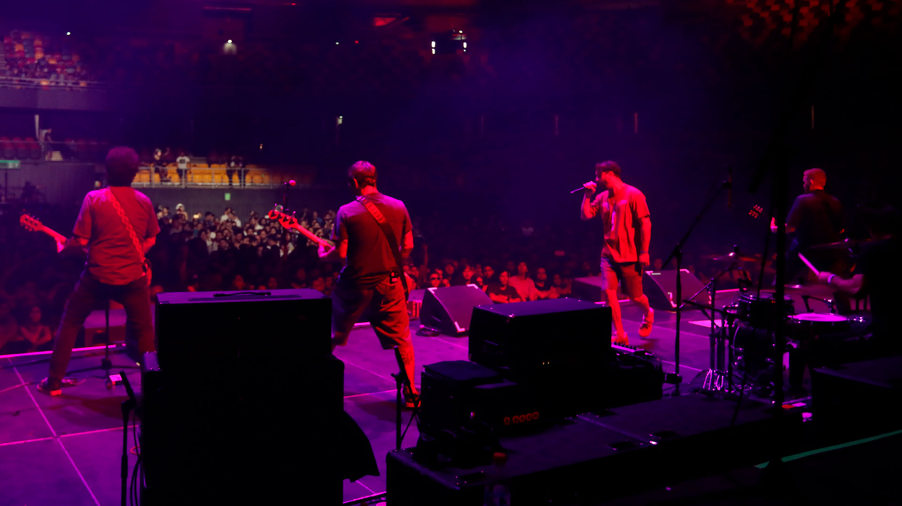

Desde sus comienzos, la banda ha cantado en inglés y español y a la vez combina melodías con denuncias, haciéndose así un lugar desde muy temprano entre las primeras bandas en su estilo. Derechos del niño y la mujer, skateboard, amor y rabia, todo está condensado desde muy temprano en la historia de Eterna Inocencia. Con siete discos en su haber, más algunos EP y cientos de grabaciones inéditas, casi todo ese material se puede encontrar en el sello que los eternos dieron a luz, llamado "Discos del Sembrador", el que a la vez, edita o coedita otras bandas similares a Eterna Inocencia, por su música o sus líricas combativas. En el último tiempo la banda ha lanzado su primer DVD "Verano permanente" en Argentina, grabado en el teatro de Flores en agosto de 2018. Uno de sus integrantes también lleva adelante el proyecto "Discos Emergentes", que tiene como fin apoyar a las bandas que recién comienzan, y no disponen de tecnología u oportunidades suficientes para mostrar su material. Eterna Inocencia llevó, desde su aparición, su música por varias ciudades de su país, así como también otros países latinoamericanos (Chile, Uruguay, Perú y Bolivia) y europeos (Francia, Suiza, España), donde, a su vez, sus melodías quedaron registradas en ediciones de sellos independientes en diversos formatos (vinilos, casetes, CD y DVD). En agosto de 2022 salió el noveno disco de estudio de la banda llamado No Bien Abran Las Flores, su retorno post pandemia que cuenta con 12 canciones que remiten a algunas de sus influencias del post punk.
